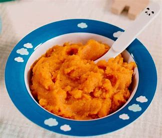

Wortelpuree

Ingredienten
- **600 g wortelen**, geschild en in stukjes
- **50 g boter**
- **100 ml melk** (of room voor een romigere puree)
- **Zout en peper**, naar smaak
- **1/2 theelepel nootmuskaat** (optioneel)
- **Verse peterselie** (ter garnering, optioneel)
Bereidingswijze
- **Koken**:
- Breng een pan met water aan de kook.
- Voeg de wortelen toe en kook ze 15-20 minuten, tot ze zacht zijn.
- **Afgieten**:
- Giet de wortelen af en laat ze kort stomen om overtollig water te verwijderen.
- **Pureren**:
- Doe de wortelen terug in de pan.
- Voeg de boter, melk, zout, peper en nootmuskaat toe.
- Pureer met een staafmixer of in een keukenmachine tot een gladde massa.
- **Afstemmen**:
- Proef en pas de kruiden aan indien nodig.
- **Serveren**:
- Serveer de wortelpuree warm, gegarneerd met verse peterselie.